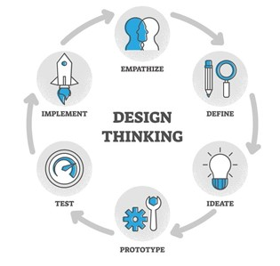

Here’s what you need to know about this creative problem-solving technique, including a definition and why it’s 5 essential steps
Design thinking is a process for solving problems by prioritizing the consumer’s needs above all else. It relies on observing, with empathy, how people interact with their environments, and employs an iterative, hands-on approach to creating innovative solutions.
the design thinking process is conducted in five stages or steps. These steps help organizations in creating products and services for their customers by understanding their needs and requirements. Here are the 5 steps of the design thinking process: